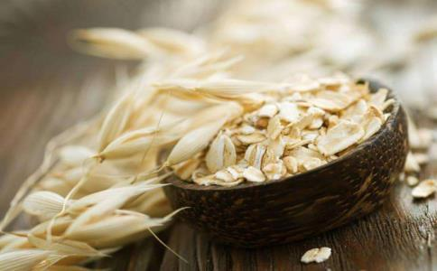

营养学家认为，经常吃些降脂清肠的食物，不仅能排除油腻，更能保护心血管，防止“三高”。以下几款有助化解油腻的食物，看看有你爱吃的吗？
燕麦含极丰富的亚油酸和丰富的皂甙素，可降低血清总胆固醇、甘油三脂和β-脂蛋白，防止动脉粥样硬化。由于燕麦含有丰富的可溶性纤维素（燕麦纤维）、亚油酸和蛋白质，能给人饱腹感，可以抑制你的食欲。
2017年，燕麦被中国营养学会评选为十大好谷物之一。每天吃燕麦粥，能养胃润肠通便，还可降胆固醇和降血脂。
洋葱洋葱含有环蒜氨酸和硫氨酸等化合物，有助于血栓的溶解。洋葱几乎不含脂肪，故能抑制高脂肪饮食引起的胆固醇升高，有助于改善动脉粥样硬化。外国人特别爱吃洋葱，他们经常用洋葱搭配高脂肪、高热量的食物，以解油腻。生吃最好，熟吃也没问题，每天吃60克，即可预防胆固醇升高。另外，用磁刀和冷水浸泡，可防止洋葱氧化刺激人流泪。
玉米含丰富的钙、磷、镁、铁、硒、卵磷脂等，及维生素A、B1、B2、B6、E和
印第安人几乎不患高血压、冠心病，主要得益于主食玉米。常吃玉米还可防癌、降胆固醇、软化血管、抗衰老，玉米中富含的玉米黄素对防止眼睛老化、视力下降也有非常好的食疗作用。煮玉米是最简单的做法。
山药有“神仙之食”的美誉，其黏液蛋白能预防心血管系统的脂肪沉积，保持血管弹性，防止动脉硬化。另外，山药含有淀粉酶、多酚氧化酶等物质，能分解蛋白质和糖，有利于脾胃的消化吸收功能，减少皮下脂肪沉积，避免肥胖，而且能增加免疫功能。
素有“海洋蔬菜”的美誉，其低热量、低脂肪的特点令营养学家关注。藻类含有植物多糖等植物化学物质，具有抗氧化、调节免疫力、抑制肿瘤、抗感染、降低胆固醇、延缓衰老等多种生理功能。
另外，海带中的胶质成分能促进体内的放射性物质随同尿液排出体外，减少放射性物质在体内积聚。海带中的褐藻酸能减缓放射性元素锶被肠道吸收。因而，海带还有预防白血病的作用，对进入体内的镉也有排泄作用。
银耳滋而不腻，为滋补良药，其富含膳食纤维，可加强胃肠蠕动，减少脂肪吸收。吃完大鱼大肉，喝一碗滋润的
含有较多膳食纤维，可促进肠蠕动，有较强通便作用，可排除肠道中过多养分。芹菜特别含有降血压成分，也有降血脂、降血糖作用。芹菜同时含铁、锌元素较高，对机体有补血、软化血管、增强食欲等帮助。另外，芹菜叶中含的胡
推荐素炒芹菜，它最大程度上保持了芹菜的原味和营养，口味清淡爽口，对吃肉较多者有很好助消化、去油腻作用。
山楂中所含的果胶是可溶性膳食纤维，有降低胆固醇，预防动脉粥样硬化的作用。
常吃山楂可除油解腻，促进消化。广东省中医院主任医师池晓玲指出，山楂既可以消食化积，也具有活血化淤的功效，对于高脂血症、脂肪肝的人群也较宜食用山楂，此时，可以配合
虽然山楂口味酸甜，能增强食欲，但对于无积滞或脾胃虚弱者应慎用，而且山楂可促进胃酸分泌，因此胃酸分泌过多者也应慎用，吃多了山楂对脾胃也不好。
推荐食疗方：山楂荷叶饮。山楂15克，荷叶9克。将山楂、荷叶洗净，水煎15分钟，代茶饮用。具有消积化滞，活血化淤的功效。尤其适用于高血压兼有高脂血症人群饮用。
苹果含丰富的钾，可排除体内多余的钠盐，每天吃110克苹果，坚持数年，可防止胆固醇升高，对维持血压、血脂均有好处。这是因为苹果里有黄酮类化合物，有降低血脂的功能。其果胶具有降低血中胆固醇作用。
红薯酸性食物摄入过多，会使人体内产生过多的酸和脂肪。红薯属碱性食物，多吃可以中和过多摄入的酸，有利于保持人体酸碱平衡。
此外，红薯还含有大量膳食纤维和胶质类等排便物质，松软易消化，能吸收胃肠中较多的水分，润滑消化道，促进肠胃蠕动，起到通便作用，并可将肠道内过多的脂肪、糖、毒素排出体外，起到降脂作用。
菌类
以蘑菇为例，蘑菇的食疗作用有很多种，其中它含有一种人体很难可以消化的粗纤维、半粗纤维和木质素，这些可以让人保持肠道内的水分，并且有助于吸收余下的胆固醇和糖分，能更好地刮除肠道中的油腻，达到刮油减肥效果。